Project Admin Features#
A Project Admin is a user who has been granted administrative authority over a specific project. Project admins can view the users that belong to the project they administer, oversee its compute sessions and model deployments, and manage its storage folders — all without needing system-wide superadmin privileges.
Identifying Project Admin projects#
When you open the project dropdown in the header, projects in which you have the project-admin role are marked with a shield-shaped badge next to the project name. Hovering the badge displays a Project Admin tooltip, confirming that selecting this project will reveal the project-admin sidebar entries described below.
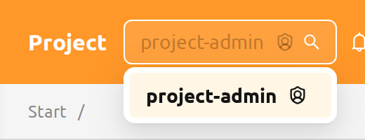
Switching to a different project from the header's project selector re-evaluates the user's role: the same user may act as a project admin in one project and as a regular user in another within the same login session. To learn how project-admin roles are granted and revoked, see Grant Project Admin Authority in the RBAC Management chapter.
Because project-admin authority is re-evaluated per selected project, the pages available to you can differ between projects. If you open a URL or select a project you do not have permission for, an Unauthorized Access page is shown with a button that takes you back to your first available page.
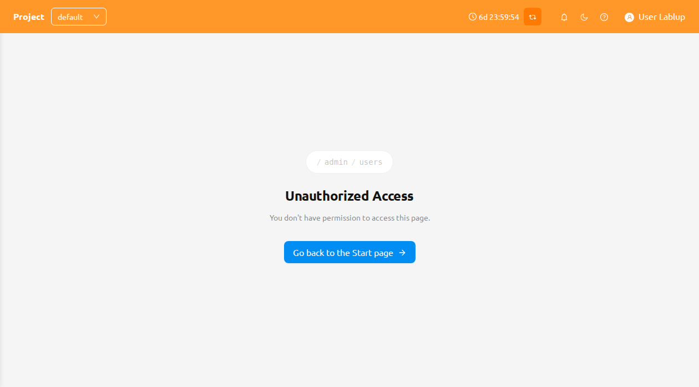
Set Project Admin#
Superadmins can grant and revoke project admin for one or more users in a single place through the Set Project Admin modal, launched from the Project admin page (Users → Project).
On each project row, click the Set Project Admin button to open the modal.
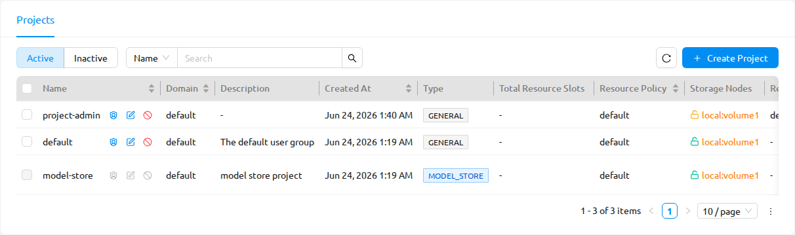
The Set Project Admin action is available to superadmins on manager 26.8.0 or later. It is hidden on older managers, and it is disabled for Model Store projects.
The modal provides:
- User select and Add: A multi-select to choose one or more users, and an Add button to grant them project admin for the current project.
- Current admins table: A list of the project's current admins, each with a Revoke admin permission (X) action to remove that user's project admin.
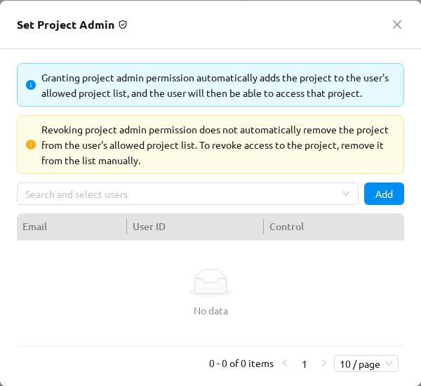
The modal shows two alerts you should read before assigning or revoking:
- Info: Granting project admin automatically adds the project to the user's allowed project list, so the user can then access the project.
- Warning: Revoking project admin does not automatically remove the project from the user's allowed project list. To block access to the project, remove it from the list manually.
Next to the modal title, the View RBAC permissions icon opens the RBAC Management page with the project's role_project_<project_id>_admin role pre-filtered and its detail drawer open, so you can inspect the underlying role. For more on that role, see Grant Project Admin authority in the RBAC Management chapter.
When you add several users at once, any that fail are surfaced through an error notification that includes the number of users that could not be assigned; the users that succeeded are still granted.
The Project Admin sidebar#
When you select a project in which you are a project admin, the sidebar's Operations section displays four entries dedicated to managing that project:
- Users — the members of the current project
- Data — the storage folders owned by the current project
- Sessions — the compute sessions owned by users in the current project
- Deployments — the model deployments owned by the current project
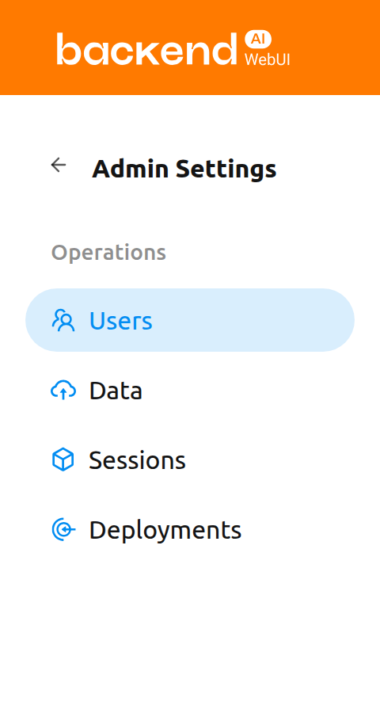
On the project-admin pages, only the items under the project selected with the project selector at the top are shown. You can check this through the banner at the top of the page.
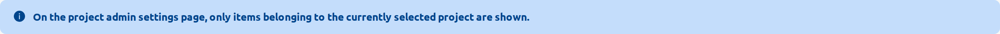
Refreshing project-admin pages#
The project-admin pages provide the same refresh button. Click the refresh button to refresh the table list.
The dropdown button next to the refresh button opens the Auto Refresh menu, where you can choose the auto-refresh interval.
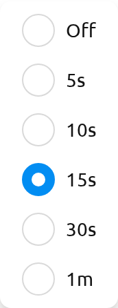
Users#
The Users page lists every user who belongs to the currently selected project. Use this page to review project membership at a glance — for example, to confirm who has access to the project's resources or to identify inactive accounts.
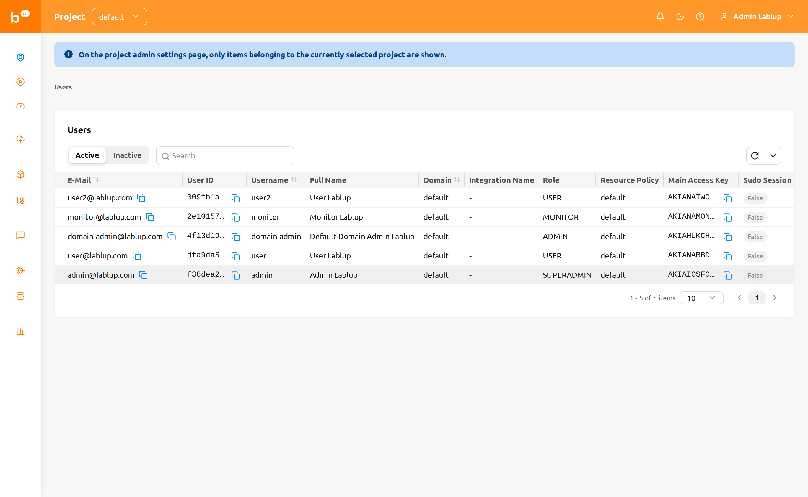
The page provides the following controls:
- Active / Inactive segmented control: Toggle between active and inactive users. Active is selected by default.
- Property filter: Filter the list by E-Mail, ID, Username, Role, or Created At.
The Users page is read-only for project admins. There are no create, edit, or deactivate actions on this page — those operations are reserved for superadmins on the system-wide Users page in the Admin Features chapter.
Data#
The Data page lists the storage folders (vfolders) owned by the currently selected project. Use this page to create project-shared folders, restore folders that were accidentally deleted, or purge folders that no longer need to be retained.
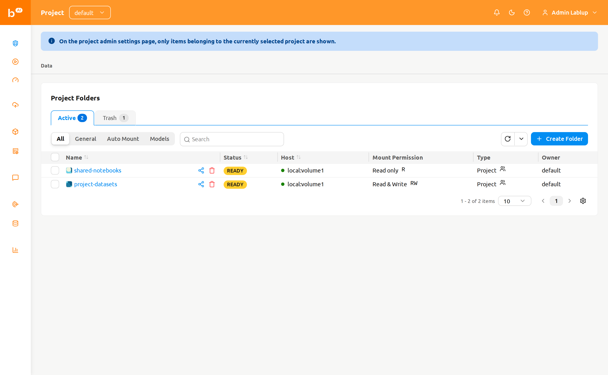
The page provides the following controls:
Active / Trash tabs: Switch between currently active folders and folders that have been soft-deleted. Each tab shows a count badge with the number of folders it contains.
Mode pill: Filter by folder usage mode — All, General, Pipeline, Auto Mount, or Models.
The Pipeline and Models options appear only when the corresponding features are enabled in the deployment — the FastTrack pipeline endpoint for Pipeline, and model folders for Models.
Property filter: Filter the list using the standard storage-folder property filter.
Create a folder#
To create a new folder from this page:
- Click the Create Folder button at the top right of the page.
- Fill in the folder details in the creation modal.
- Click Create to create the folder.
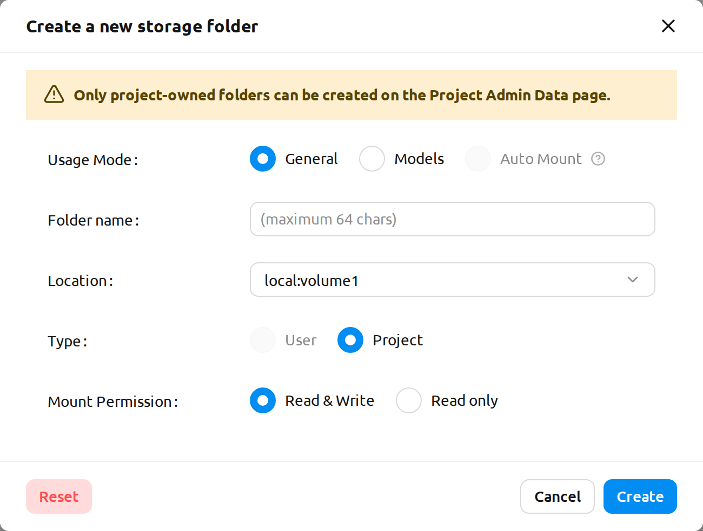
Only project-owned folders can be created from the Project Admin Data page. The creation modal displays the following message to make this explicit:
Only project-owned folders can be created on the Project Admin Data page.
For details about folder usage modes, permissions, and quota, see the Storage Folders chapter.
Restore or permanently delete a folder#
Switch to the Trash tab to see folders that have been soft-deleted. Select one or more folders using the row checkboxes, then use the header action buttons that appear next to the selection count:
- Restore: Move the selected folders back to the Active tab.
- Delete forever: Permanently purge the selected folders. This action is irreversible and requires you to type the folder's name to confirm.
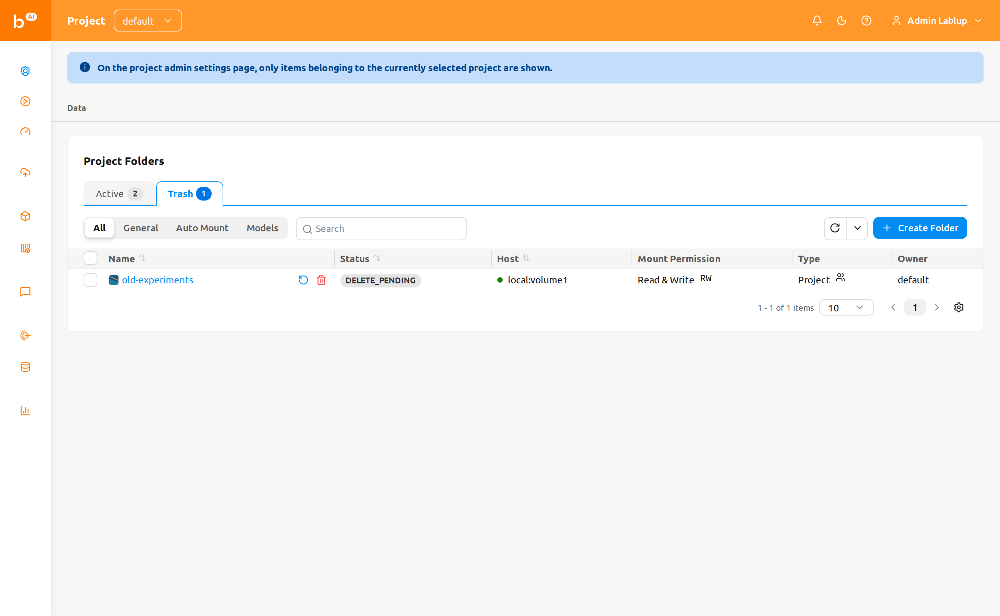
Permanently deleting a storage folder removes all of its contents and cannot be undone. The confirmation modal requires you to type the folder's name before the deletion button becomes enabled.
Sessions#
The Sessions page lists the compute sessions owned by users in the currently selected project. Use this page to monitor active workloads, identify long-running sessions, or terminate sessions that are no longer needed.
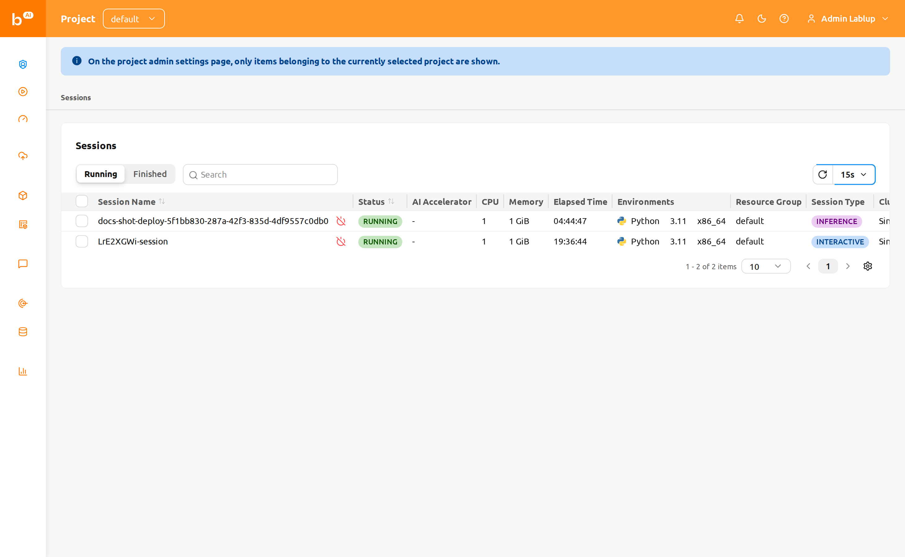
The page provides the following controls:
- Running / Finished segmented control: Toggle between currently running sessions and sessions that have already finished.
- Property filter and sorting: Filter the list by ID, Session Name, or Owner UUID. Click a sortable column header to sort the table.
Terminate sessions#
To terminate one or more sessions:
- Select the sessions you want to terminate using the checkboxes in the leftmost column. To terminate a single session, you can use the Terminate button next to the session name.
- Click the power-off icon in the table header to open the confirmation modal.
- Review the list of targeted sessions in the modal.
- Optionally select the Force Terminate checkbox to terminate or cancel the sessions regardless of their current status. Enabling this option displays a warning and changes the confirm button label from Terminate to Force Terminate.
- Click the confirm button to terminate the sessions.
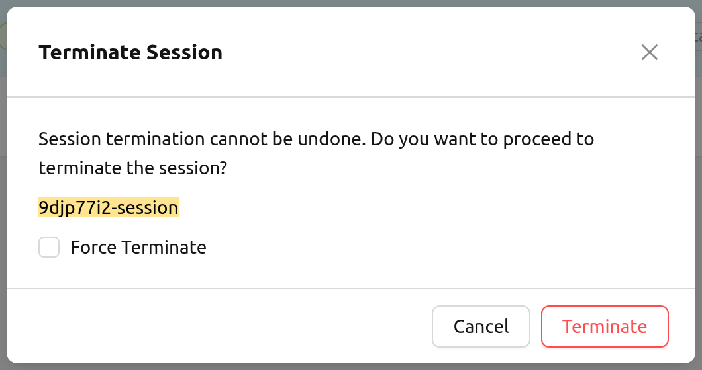
Use Force Terminate only when a session is stuck and its state does not change for an unreasonably long time. Force terminate does not delete the actual containers on the agent(s), so manual cleanup may be required afterward.
Clicking a session name on the project-admin Sessions page does not currently open a session detail drawer. For background on compute sessions and their detail view, see the Session Page chapter.
Deployments#
The Deployments page lists the model deployments owned by the currently selected project. Use this page to oversee inference endpoints, edit deployment settings, or remove deployments that are no longer in use.
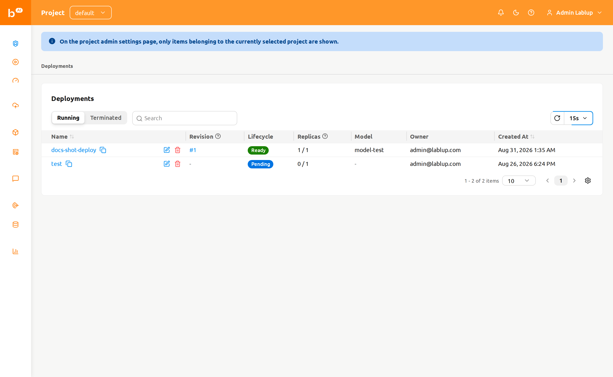
The page provides the following controls:
- Running / Terminated segmented control: Toggle between currently running deployments and deployments that have been terminated.
- Property filter: Filter the list by Name, Tags, Endpoint URL, or Open to Public.
The table displays the deployment's Name, Revision, Lifecycle, Replicas, Model, Owner, and Created At columns, along with the deployment's domain, project, and resource group when relevant.
The Revision column shows the deployment's current revision as a clickable #N link. Click it to open a drawer that displays the details of the current revision.
Deployment actions#
The following actions are available on each deployment row:
- Click the deployment name to navigate to the deployment detail page within the project-admin scope.
- Click the revision number (
#N) to open the revision detail drawer for the current revision. - Click the pencil icon to edit the deployment's configuration in the settings modal.
- Click the trash icon to delete the deployment. The confirmation modal requires you to type the deployment's name before the deletion is performed.
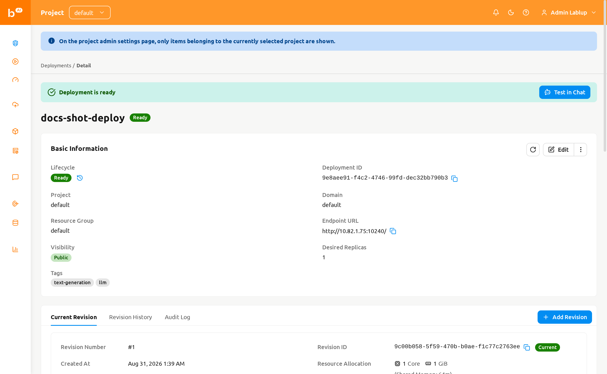
For details about deployment revisions, replicas, and traffic routing, see the Deployments chapter.